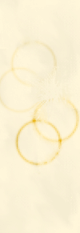

|
|
TONY Tony murió. No fue exactamente una sorpresa para nadie. Llevaba varios meses cuesta abajo, sin remedio. Supongo que incluso su familia se hubiera acostumbrado a la idea, si se hubieran enterado de algo. Pero como Tony siempre fue la oveja negra, y nunca encajó para nada, eventualmente todos se desentendieron de su vida. Tampoco él hizo el más mínimo esfuerzo para ser aceptado. En cuanto pudo se buscó un trabajo en una funeraria, y reunió el dinero para comprarse un apartamentico. Nunca he sabido cómo se las arregló. Después le dio por los tatuajes y en eso estaba cuando le dio por el arte y finalmente le dio por el suicidio. En conjunto, no parece una cadena de consecuencias tan deplorable después de todo. Tampoco original. (abrir nota +) ----------- Quizás hayan oído hablar de
Tatú. Por algún tiempo fue toda una celebridad,
aunque ahora casi nadie lo recuerde. Y es que sin lugar a dudas era un
tipo original. Un día se le ocurrió tatuarse el
nombre de cada mujer con la que había hecho el amor. Alguien
le celebró la idea y a él mismo le
pareció muy buena; a partir de entonces se
convirtió en costumbre. No crean que se grababa el nombre
así, sin
más. Nada de eso, era algo verdaderamente
artístico. Trataba por todos los medios de que el tatuaje
reflejara algo de la personalidad o el físico de la mujer.
Pasaba horas dibujando para decidir el color, la posición,
el lugar del cuerpo, en fin, que cada detalle era escrupulosamente
planeado. Abundaban en su piel los más asombrosos
diseños. Aquí unas letras góticas,
allá otras de estilo verdaderamente barroco. Una secretaria
dejó como recuerdo un nombre en letras de Remington. Una
muchacha de rasgos indios, marcó su cuerpo con una palabra
exótica, impronunciable. El que identificaba a una
informática era algo así como: ♪☺♂☼♥.
Al cabo de un par de años la tinta cubría gran
parte de su cuerpo y miembros. Su piel se transformó en una
verdadera obra de arte.
Se corrió la voz y las muchachas
del barrio se
mostraron muy interesadas. Se le insinuaban con la esperanza de formar
parte de la lujosa galería de su alma. Pero eso no es todo.
La gente pagaba por ver sus tatuajes, en especial los extranjeros. No
tardaron algunos intelectuales en notar la profundidad conceptual, de
inevitables consecuencias metafísicas, con la que
esta nueva manifestación artística, surgida de
manera espontánea, etc. Que si no se cuida le quitan el
cuero para exponerlo en Bellas Artes. Pronto Tatú
empezó a ver las dificultades que todo este éxito
acarreaba. No podía dejar de dibujarse la piel cuando
quisiera. Cada chica que pasara por su cama, exigía como
comprobante una marca en su cuerpo. Los extranjeros y demás
mirones esperaban novedad constantemente. Los intelectuales lo
empujaban a ser más atrevido y profundo. él, por
supuesto, no quería decepcionar a nadie, pero se
sentía muy contrariado. Su propia piel le era
ajena; le había sido arrebatada. Lo peor, no obstante, era la
presión que su
propio arte ejercía; pues Tatú se
había vuelto un instrumento de la idea. Extremó
las precauciones al tatuarse. Ya no escogía a las mujeres
por su belleza y personalidad, sino por las sílabas de su
nombre. Llegó a la abstinencia en algunas oportunidades,
para no verse obligado a romper cierta simetría o figura
general que le gustaba. Una vez estuvo en ayunas, como quien dice,
durante más de un año. Ya sabemos que
no le faltaban oportunidades, por lo que, para no verse tentado
siquiera, optó por no salir nunca de su casa. Todo esto lo afectó notablemente:
desarrolló una aguda neurosis. Soñaba que los
nombres peleaban entre sí. Se gritaban insultos desde un
extremo a otro de su cuerpo. Había constantes disputas
domésticas y se formaron bandos, alianzas y ejes.
Llegó a creer que su piel cobraba vida independiente en las
noches. él pobre muchacho pasaba las madrugadas en vela,
huyendo de su propia creación. Empezó por removerse
quirúrgicamente
los dibujos más belicosos, con la esperanza de que
así acabaran las trifulcas, y como había ganado
algún dinero durante su época de más
fama, podía costearse las operaciones. Además,
algunos coleccionistas se comprometieron a adquirir su piel muerta, lo
que constituyó otra fuente de ingresos. Pero a pesar de las
innumerables horas pasadas en los quirófanos, los nombres
siguieron peleando encarnizadamente, y desesperando al dueño
sin consideración. Ahora ni siquiera esperaban a que
estuviera dormido, sino que incluso en la vigilia se insultaban unos a
otros. Acudió entonces a métodos más
rápidos y dolorosos. Cuando amanecía,
después de toda una noche en vela, quemaba los que se
habían mostrado más activos con una plancha
ardiente. Era, según creía, una forma de
intimidar a los otros y hacerles guardar silencio. El resultado, sin
embargo, fue exactamente el contrario, pues los tatuajes cogieron la
manía de insultarlo directamente, y recriminarle sus
amoríos y cada una de sus acciones, y toda cosa imaginable,
como esas malas esposas que persiguen a sus maridos, día y
noche, con crítica y quejas. La última vez que supe de
él estaba
internado en el Hospital Psiquiátrico: se había
desollado a sí mismo.
----------- Llegué caminado a la esquina Calzada y K. - Al entierro de un tipo como Tony se va a pie. No hay dudas al respecto. - Sólo entonces me percato de que no sé en que sala está. Así que deambulo por los pasillos y subo y bajo escaleras y finalmente me pierdo, en este sarcófago gigante, como se me antoja desde hace un rato el edificio. Acabo en una nave amplia, con poca iluminación, que parece un sótano. A lo largo de las paredes, hasta la altura del techo, están amontonados en filas decenas de ataudes. Me siento sobre uno de ellos. Prendo el cigarro. Es raro, pero se está bien aquí. En medio de este lúgubre almacén. Mejor que recorriendo los velorios. Examinando los muertos ajenos, a ver si por casualidad alguno es el mío. Gastando la mirada sobre los rostros de personas que lloran o resuman amargura. Sí, aquí se está mejor. El cigarro empieza a hacer efecto. Estoy convencido de que a Tony le hubiera agradado la idea: que alguien fumara en su velorio. Esa era la intención, socio. Créeme. Lo habría guardado para la madrugada. Pero te perdiste, y te voy a dar la mala. Este es el mejor momento. - ¿Me invitas? - oigo preguntar a mis espaldas. Me vuelvo asustado. No es que crea en aparecidos, pero la simple presencia de otra persona en aquel lugar me causa inquietud. Casi a la altura del techo, entre las sombras, hay un muchacho sentado en el borde de un ataúd. - No te pongas tenso, no soy un fantasma. - Aclara cuando nota que mi sobresalto, en vez de esfumarse, aumenta. Porque a través de la oscuridad y de la juventud de aquel muchacho, reconozco a Tony. Mi amigo muerto desciende con cuidado, usando los féretros como escalones, hasta estar a mi altura. Se sienta a mi lado. Con el desenvolvimiento que le es particular, coge el cigarro de entre mis dedos. Hace un rápido gesto agradecimiento, y lo lleva a sus labios. Una llamarada se aviva en el porro, mientras sus pulmones (de asmático) absorben el humo con violencia de ciclón. Es él, no hay dudas. - ¡Está de pinga! - afirma sin dejar escapar el aire. Me lo devuelve. Fumo. Luego se lo paso a él nuevamente. Y en pocos minutos la pata cae al piso, cuando es sólo papel. - Oye, y si no te molesta, ¿qué haces por aquí? - me pregunta. - No eres empleado, o te conociera ya. Espero que no se te haya partido nadie. - Sí... un socio. - Coño, que pena. - ¿Y tú? - Trabajo aquí. No tengo casa, así que duermo allá arriba. - dice señalando a la oscuridad de donde había descendido - Estos cajones son lo máximo. Están acolchonados por dentro. Si hay frío, los cierras y completo. - Está fuerte eso. - ¿Te parece? Déjame decirte que tiene sus ventajas. Cuando quieres templar, lo único que tienes que hacer es ir a G. Buscas una friki, de esas góticas, y le comentas lo del ataúd. En menos de una hora la tienes clavada. En aquel de allá - dijo señalando hacia un rincón apartado - me comí el otro día a una rubia como modelo. Con un culo... - y exagera con la cabeza, trazando un semicírculo, mientras deja la última sílaba en un calderón. - No lo había visto desde ese punto de vista. - Y ¿cómo llegaste a aquí abajo? Te perdiste ¿no? - Tony siempre ha sido muy perceptivo. - ¿Cuál es el nombre del socio? Te puedo averiguar en que sala está. - y su ofrecimiento es tentador, pero ¿cómo le explico que mi socio se llama... que es... él? De ninguna forma. Además, esta puede ser la última vez que hablemos (pues con Tony no hay nada seguro), y no voy a cagarla. - No, yo lo busco luego. Vamos a dar un poco de muela antes. - Como prefieras. - nos quedamos en silencio un rato. No hay nada que decir. - ¿Quieres caramelos? Me los regaló la culona. - dice finalmente, mientras forcejea con un envoltorio centelleante. Los rechazo con la cabeza. - Te invitara a otro, pero tengo el paquete cerrado. - ¿Qué? - Tengo un buen veneno allá arriba. Pero no puedo abrirlo hasta que el dueño lo pese. Entonces seguro que me da algo. Siempre me regala unos tacos para el consumo. Pero si el negro llega y ve el paquete abierto, se arma la grande. Así que por ahora no hay chance. - O sea, eres como el intermediario... - dejo la pregunta en el aire y sin acento. - Sí, la traemos del interior. En el carro fúnebre. La policía nunca para a los carros de muertos ¿verdad? - y ríe sanamente - Podemos traer queso, carne de vaca, lo que queramos. Una vez incluso trajimos un muerto que no le tocaba venir para la habana. Hasta después de muertos quieren venir. Y pagaban bien. Pero la yerba da más. - Así es como ahorraste para el apartamento, ¿no? ¡Cabrón! Traficando yerba. Ahora es Tony quien me mira sorprendido, casi asustado, e inmediatamente entiendo que acabo de meter la pata hasta lo último. Se aleja de mí violentamente, de un salto. Todo su cuerpo transpira agitación. Está preparado para atacar o defenderse a toda costa, como un animal acosado. Ya no hay arreglo, o le explico o va a creer que soy de la policía. - Tony... - ¿Cómo cojones sabes mi nombre? ¿o del apartamento que tengo fichado? - Mira, tranquilo... Pero el me empuja cuando intento acercarme. Y me grita algo de pornográfica brutalidad. - ¡Porque estás muerto, cabrón, por eso! - ya está hecho, ahora me queda explicarle a un tipo drogado que no quiero matarlo, que no es una metáfora, sino que en realidad está muerto, patitieso, que se partió ayer y vine a su velorio. Termino convenciéndolo de que hay alguien muy parecido a él, muerto en algún lugar de la funeraria. Y aunque no logro borrar sus sospechas pues sigue creyendo que soy un policía encubierto, al menos lo calmo con un argumento irrefutable: si hubiera venido a cogerte ya lo hubiera hecho, intentado, aclara él, y se lo concedo, como quieras, pero ¿ves? no hago siquiera el intento. - Vamos a ver si hay algún Tony aquí. Sígueme. Me conduce a través de unos cuantos pasillos hasta una oficina. él entra y yo me quedo afuera pensando en el mal camino que ha cogido todo esto. Cuando sale tiene un tic juguetón en los labios. - Pues hay un Tony. Segundo piso. ¿Este tipo se parece tanto a mí? - Tu viva estampa. Salvo porque está... ¡MUERTO! - por fin, desespero. - Bueno, hombre, no te pongas así. De veras, me gustaría ver a ese sujeto. Ven, es por aquí. - Lo sigo resignado. Subimos un par de escaleras y entramos en una puerta escondida en un rincón. Ahora sí, aquí están todos sus familiares, algunos de sus amigos íntimos. Tiene que reconocer a alguien. Pero Tony sigue en la puerta, ignorando e ignorado por todo el mundo. Tania y su científico están al lado del muerto. Cuando descubren nuestra presencia, se encaminan a nosotros. Traen consigo el frasco donde el feto reposa su muerte prematura - Mira a esos dos locos. Trajeron un feto. Que ocurrencia. - comenta Tony casi con admiración. Es él, no cabe dudas. - ¿No vas a presentarnos? - pregunta Tania con descaro empalagoso. - Para. - le respondo. Pero al ver que la muchacha no finge, sólo atino a decir. - De aquí a unos años te hará el tatuaje que... ya te hizo. - me doy perfectamente cuenta de que la frase es una idiotez, ¿cómo es que no lo reconocen? - Tony, pásame los caramelos. Sin rencores ¿eh? - le digo al feto mientras abro el frasco y dejo caer dentro las golosinas. - No tiene dientes aún. - interviene el científico. - Siempre podría chuparlos. - Tania mira los papelitos relucientes diseminados en el fondo del tarro. Tiene una fijación oral. - ¿Ya le dieron el pésame a la madre? - ¿Quién es? - pregunta Tania. - Aquella señora. - Luce mal... - acota Tony con empatía, y decido que es hora de acabar con aquella situación que me enferma. Lo tomo del codo y lo arrastro frente al sillón donde su madre está desmayada, la cabeza entre las manos. La mujer está destrozada. Llora físicamente, con todo el cuerpo, no con los ojos (lo que sería sólo emocionalmente), ni con el desgano de la resignación. A su alrededor hay un aura tan profunda como los agujeros negros. Inmediatamente lamento haber traído al otro Tony. Pero ya no hay remedio, porque ella levanta la vista y todo queda como suspendido. Ellos se miran y nada pasa. Los observo alternativamente. - Lo siento mucho. - le digo a la mujer. Ella no responde. - Yo también. - dice el Tony. Y su madre ladea un poco la cabeza. Después seguimos andando hasta el ataúd, no me asomo. Pero Tony sí. Hace una mueca simpática y se aleja sin alterarse. - ¿Y bien? - lo interrogo cuando hemos llegado a la puerta nuevamente. - Esa señora se da un aire a mi madre. Pero mi vieja no tiene el pelo así. Con respecto al muerto, sólo nos parecemos en el nombre. - ¡Pero si son cagaditos ustedes dos! - susurro. - No, ni hablar. - El problema es que no tiene piel. Pero mira, te voy a buscar una foto, alguien aquí tiene que tener una foto... - Deja eso. - me interrumpe - Es una coincidencia curiosa. Nada más. Estás completamente quemado. Pero se ve que eres buena persona. Pasa por aquí un día de estos y te invito a un taco. - me prometió antes de alejarse campante por el pasillo. - ¿Qué fue todo eso? - me pregunta Tania con curiosidad sincera. Pero no tengo ninguna respuesta buena que darle. A mis espaldas los sollozos de la madre aumentan. - Hay que estar preparado para la muerte. Es un acontecimiento natural. No vale la pena alterarse tanto. - sentencia el científico. Lo miro incrédulo. - ¿Y no me llorarías a mí? - le pregunta Tania, pero como lo conoce bien, no empeña mucha esperanza en sus palabras. Tony se deja crecer el pelo. Deja la escuela. Fuma marihuana. Su madre lo acosa a gritos durante años. - No lo creo. Estoy acostumbrado a pensar que todo debe terminar algún día. Puede ser con la muerte, o de cualquier otra forma. El caso es que nada es eterno, y uno debe estar consciente de ello. Una vez que se observa con toda claridad esta afirmación, y se valora a profundidad, la mente se aclara de sentimientos pasajeros y enfermizos como estos que presenciamos. Tony se va de la casa a los 18 años. Busca trabajo en una funeraria. Su familia, en bloque, lo detesta. - En todo caso es más probable que yo te entierre a ti, cariño. Te vestiría con la bata de médico. Traería todos tus títulos y los pondría en las paredes. Después pondría a todo volumen esos discos que tanto te gustan de Chopin. Y ... Tony compra un apartamento. Su madre nunca lo visita. Tony hace tatuajes, conoce mujeres, se tatúa sus nombres. - Estos rituales son para los vivos. Los muertos no los necesitan. Son para cauterizar las heridas de los que se quedan, para hacerles creer en las fantasmagorías del más allá. Un buen científico no ve aquí más que la debilidad del hombre sumido en el oscurantismo... Tony muere. Su madre lo llora. - ¡Te callas de una buena puta vez! - y antes de darme cuenta tengo al viejo agarrado por las solapas. A mis espaldas cobra cuerpo un murmullo de desaprobación. Me vuelvo. Desde su sillón, la madre de Tony me fulmina con la mirada. Alguien me toma del brazo. Dalila está junto a mí, con una súplica aflorando en sus labios fruncidos. Suelto al viejo y me dejo conducir por ella. Afuera. A la calle. A ese niño en su vientre. A la vida. |
||||||||||

